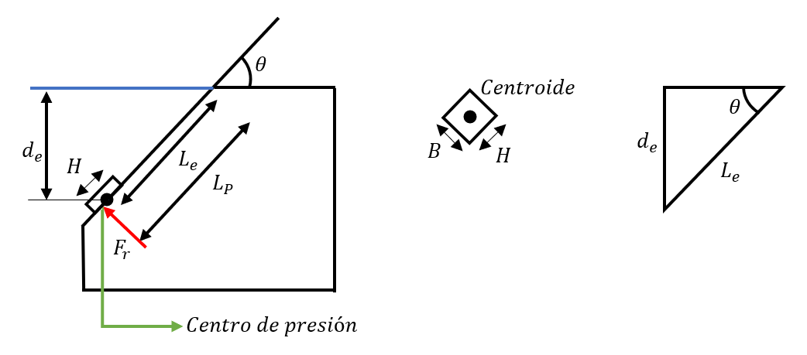
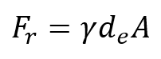
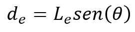
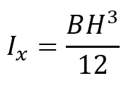
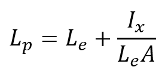
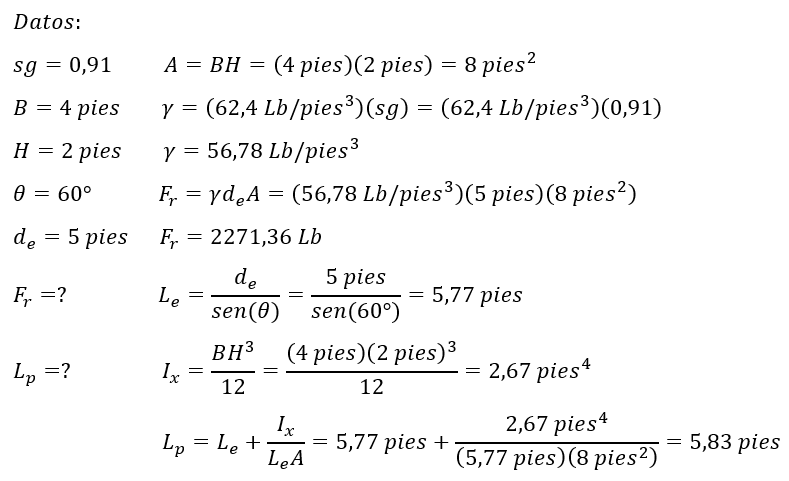

Tema 10: Áreas planas sumergidas general.
Los muros de contención son ejemplos típicos de paredes rectangulares expuestas a una presión que varía desde cero, en la superficie del fluido, hasta un máximo, en la parte inferior de la pared.
Centro de presión
La fuerza real se distribuye sobre la superficie de la pared, pero para fines de análisis, es conveniente determinar la fuerza resultante y el sitio donde anda.





Ejemplo:
El tanque contiene aceite lubricante con una gravedad de 0,91. El portillo rectangular con dimensiones B=4 pies y H=2 pies está situado a la pared inclinada del tanque (θ=60°). El centroide está ubicado a una profundidad de 5 pies a partir de la superficie de aceite. Calcule la magnitud de la fuerza resultante y la localización del centro de presión.

Respuesta: la fuerza resultante vale 2271,36 Lb y el centro de presión se encuentra a 5,83 pies.
Enlaces de Interés
- https://mecanicodelosfluidosudg.blogspot.com/2016/03/mecanica-de-fluidos-areas-planas.html
- https://prezi.com/rpxtsygoknwx/fuerzas-sobre-areas-planas-sumergidas-en-general/
- https://www.youtube.com/watch?v=snSJJvOAXro